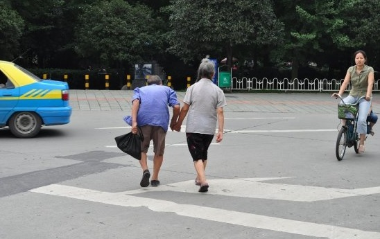
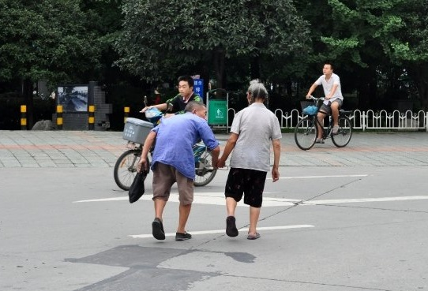

×
Project 01 Introduction
辛丑年春節期間與上海哲學愛好者談及當年出席杭州阿里開發者大會之經歷:
與我國各地青年開發者於會中交流,與阿里干部於西湖畔樓外樓品嚐大閘蟹, 見IT鉅子馬云聽其議論之宏辯。
及後閱讀其關於『精準扶貧』的新聞報導, 受其啟發產生了技術報國的想法。
第一個『人工智能精準扶貧』的點子, 蘊釀於哲學群組的頭腦風暴風眼中。
Project 02 Introduction
第二個想法誕生於2020年2月中旬,抗疫後勤戰線中, 本為疫情中失去親人之兒童隔離/治療時而設。
欲仿傚獅王於冰火島授無忌武學要點的方式, 將母校(碩士)商學院之實用知識要點免費相贈。
授人以魚不如授人以漁。
當大眾聚焦於眼前疫情, 創辦人與校方Marketing Strategy教授所憂的是當時未知總數失去親人的孩子往後的生活。
及後國家抗疫行動之果斷高效卻令創辦人落地實行之步伐跟不上, 現轉移用作精準扶貧項目之中。
Project 03 Introduction
執子之手 與子偕老?
第三個想法, 非為扶貧, 乃為喪偶之老人而設。


Project 04 Introduction
適逢百年不遇大變局，願當技術攻堅排頭兵。
年少不懂李鴻章，如今方知真中堂
凝聚前人智慧, 敢於開拓盛世